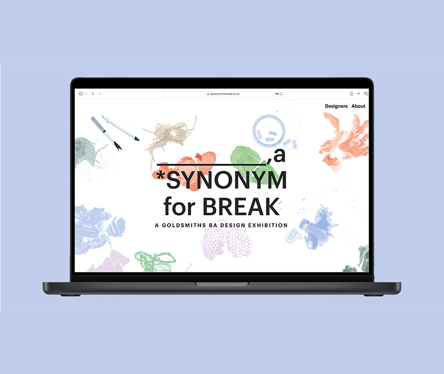
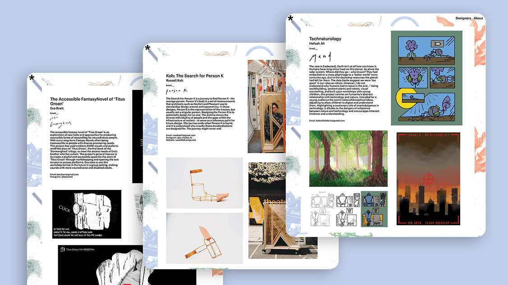
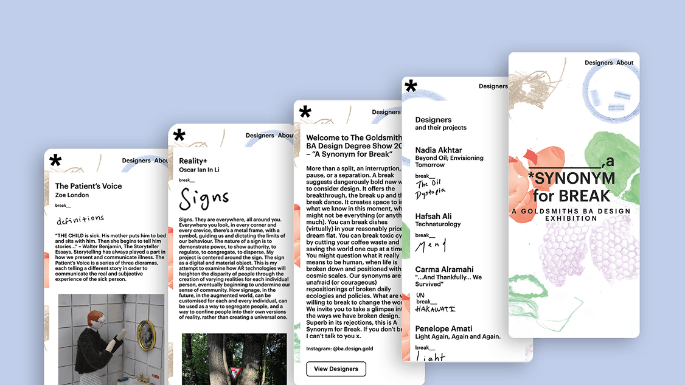

“A Synonym for Break” was the 2024 graduate exhibition for my BA Design course. I took the lead in designing and developing the exhibition website, creating a platform to both showcase student work and share information about the physical exhibition.
Website no longer liveThe project management aspect involved liaising with the stakeholders of the project including my fellow students, tutors and exhibition coordinator to ensure that all requirements were being met. I assembled a small team to help with the content management and development of the project. The website would host the work of approximately 80 students so I gathered around 6-8 people to help with the content management. This involved collecting the descriptions and media content from all of the students, checking for spelling and grammatical errors, checking image formatting and writing compelling alt-text for all media content. I wrote a simple brief for each task to ensure consistency and created spreadsheets which the team could use to manage and track the content.

The designs for the interface were created using Figma. The visual style was inspired by the hardcopy catalogue which had already been designed. The idea was to match the visual style of the website as closely as possible to the catalogue to create consistency across the visual identity of the exhibition. I designed the website to be responsive so that it would be suitable for all screen sizes.
For the development I worked as the primary developer where I utilised HTML, CSS and JavaScript to build the website. There was one other developer who worked on the animation of the website. Over a two week period (where we were still finishing off our own personal projects) we managed to develop the website together.

The project was completed on schedule and was a resounding success! It was great to see my peers happily showing off their work on the website that I helped build.
If I were to work on this project again I would develop the project to be more accessible, following WCAG guidelines closely. For example using more descriptive HTML tags within the HTML file and placing more thought into keyboard interactions and focus indicators.